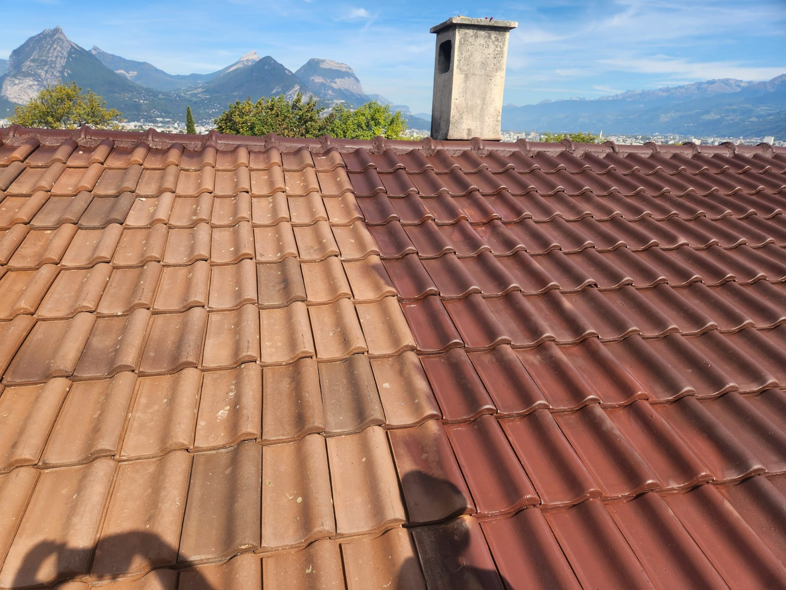
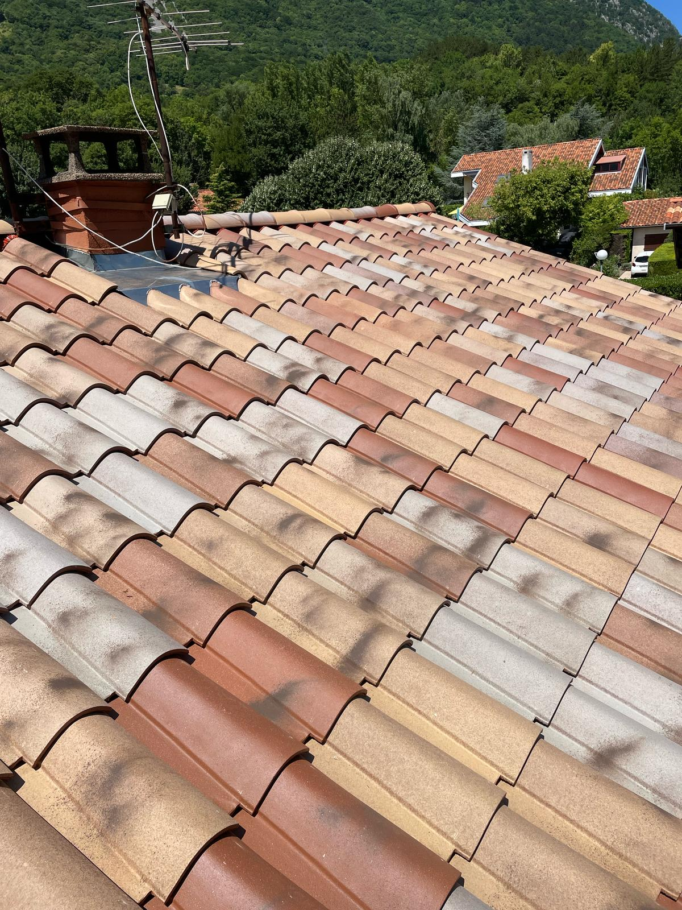
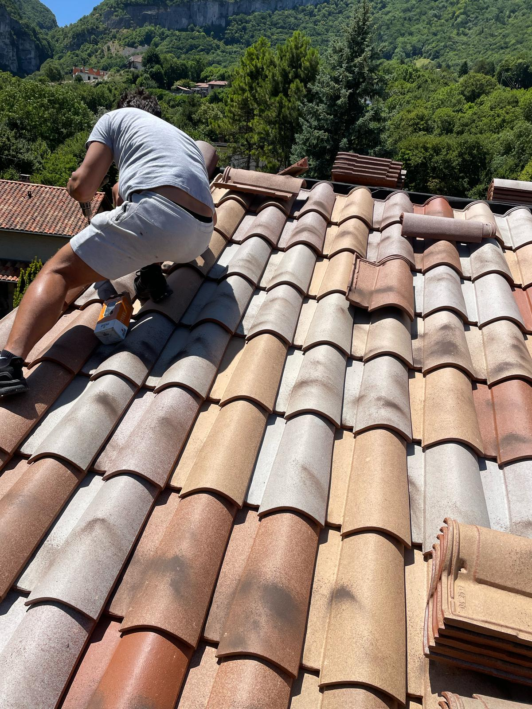
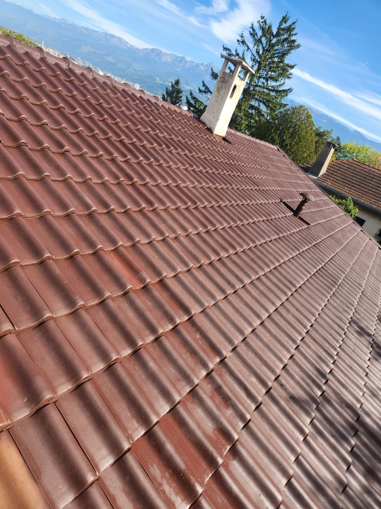

Votre Toiture Propre et Protégée
Avec 25 ans d'expérience et une formation au Compagnonnage, Compagnon Destrich est le spécialiste du nettoyage et démoussage de toiture en Isère. Nous intervenons sur Grenoble, Sassenage, Voiron, Échirolles et toute l'Isère pour redonner à votre toiture son éclat d'origine.
Le démoussage et le traitement anti-mousse prolongent considérablement la durée de vie de votre couverture. Nous utilisons des produits professionnels certifiés pour des résultats durables.
Nos prestations nettoyage & démoussage
- Nettoyage toiture haute pression – toutes couvertures
- Démoussage complet – élimination mousses et lichens
- Traitement anti-mousse préventif longue durée
- Nettoyage sur tuiles, ardoise, bac acier, fibrociment
- Réparation de fuites ponctuelles
- Remplacement de tuiles cassées ou endommagées
- Intervention avec nacelle pour accès difficile
- Devis gratuit et diagnostic sur place



